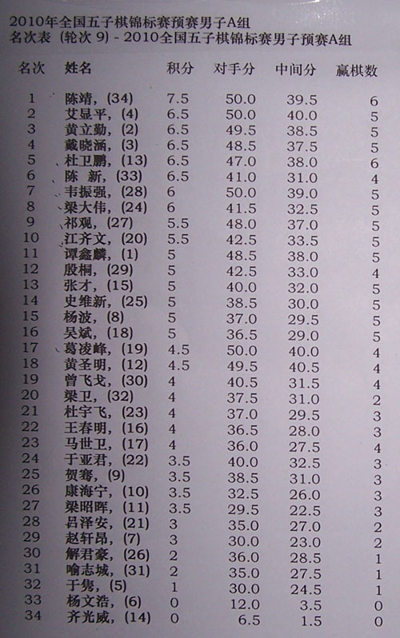
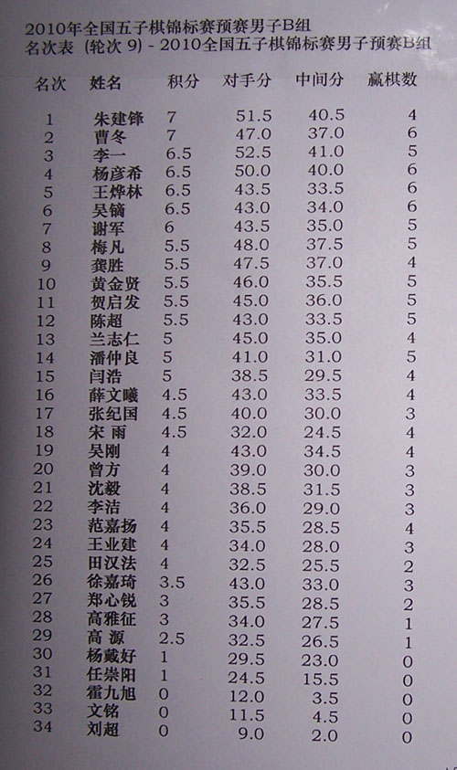

男子组决赛对阵
#1 男子组决赛对阵 作者：我是裁判 发表时间：2010-10-4 18:55:00
陈靖-杨彦希黄立勤-曹冬
艾显平-李一
戴晓涵-朱建锋
#2 Re:男子组决赛对阵 作者：松痕 发表时间：2010-10-4 18:56:06
现在竞猜冠军还差不多。。。
#3 Re:男子组决赛对阵 作者：哈根小魔 发表时间：2010-10-4 19:04:19
 巅峰对决，精彩！
巅峰对决，精彩！
 虽然有点血雨腥风，总有人会笑到最后！
虽然有点血雨腥风，总有人会笑到最后！
高手们，加油~~~Aza aza fighting！！！
#4 Re:男子组决赛对阵 作者：掌棋如烟 发表时间：2010-10-4 19:04:33
99这个爪子缺个指头……大鱼不要还他衣服了！冬哥是不是该请我吃饭#5 Re:男子组决赛对阵 作者：堇色 发表时间：2010-10-4 19:06:12
如烟在这施法。。。危险了。。。
#6 Re:男子组决赛对阵 作者：周光乐 发表时间：2010-10-4 19:26:22
 都是强人，都是好汉
都是强人，都是好汉
#7 Re:男子组决赛对阵 作者：飞飞 发表时间：2010-10-4 19:29:59
韦振强、杜卫鹏就这样出局了。。。。残酷啊#8 Re:男子组决赛对阵 作者：黄药师 发表时间：2010-10-4 19:37:52
陈靖-杨彦希 和棋，加赛杨彦希胜出黄立勤-曹冬曹冬胜出
艾显平-李一李一胜出
戴晓涵-朱建锋 和棋，加赛，朱建峰胜出
 竞猜一下！
竞猜一下！
#9 Re:男子组决赛对阵 作者：棋情 发表时间：2010-10-4 19:40:56
据我估计今晚金花大决战正在进行中！！［此帖子已被 棋情 在 2010-10-4 19:41:31 编辑过］
#10 Re:男子组决赛对阵 作者：时光漫步 发表时间：2010-10-4 19:42:15
肯定是我师傅黄力勤胜利了，师傅我永远支持你#11 Re:男子组决赛对阵 作者：极地剑客 发表时间：2010-10-4 19:42:55
支持朱哥。。。。~雄起#12 Re:男子组决赛对阵 作者：五子棋痴 发表时间：2010-10-4 20:00:55
回黄药师：1/4决赛如果和棋，小组名次高者直接晋级，无需加赛。
我也来个不负责预测：
上半区：
陈靖-杨彦希：以两人本届比赛的状态，加上道道只需和棋即可出线，胜负预计不会有太多悬念。（陈靖胜出）
曹冬-黄立勤：无论从实力，大赛经验上看，这样的考验对曹冬而言显然不成问题。（曹冬胜出）
下半区：
艾显平-李一：这一盘比较难预测，谁猜中开局可能会对本局胜负产生重大影响。如高飞开局，以其对瑞星的熟悉程度，预计结果不会有太多悬念，如道士开局，那么可能是五五开的局面。（艾显平胜出）。
朱建峰-戴晓涵：本届状态极佳的朱建峰运气比较背，虽有和棋即出线的巨大优势，但至少目前应该还不具备与小天抗衡的实力。（戴晓涵胜出）。
半决赛：
艾显平-戴晓涵：对高飞而言，对上小天，没有了开局上的优势，其中盘实力相对较弱的软肋会暴露无遗。（戴晓涵胜出）
决赛：
曹冬-戴晓涵：中国新老两代五子棋的代表人物直接对抗。在目前RIF规则的背景下，研究的重要性已经逐渐赶上甚至超过了中盘实力。尤其在每方只有45分钟+30秒的用时，研究的重要性会更显突出。对于这两名棋手而言，显然戴晓涵占据了上风。（戴晓涵胜出）
（以上预测纯属娱乐，如有雷同，不胜荣幸）
#13 Re:男子组决赛对阵 作者：嗯嗯嗯 发表时间：2010-10-4 20:18:03
道道冠军，江苏该拿个冠军了#14 Re:男子组决赛对阵 作者：冰魔 发表时间：2010-10-4 20:29:25
纯属扯淡
#15 Re:男子组决赛对阵 作者：掌棋盟天地一沙鸥 发表时间：2010-10-4 20:35:39
九老师加油 你是最强滴#16 Re:男子组决赛对阵 作者：被感动的人 发表时间：2010-10-4 20:36:32
沙鸥来了也不冒泡儿！打倒你！#17 Re:男子组决赛对阵 作者：小帮帮 发表时间：2010-10-4 20:38:11
棋痴的遇见有一定的道理！只不过五子棋变化万千啊，小天还能如日中天吗？
#18 Re:男子组决赛对阵 作者：梧桐风 发表时间：2010-10-4 20:38:41
 试目以待~
试目以待~
#19 Re:Re:男子组决赛对阵 作者：掌棋盟天地一沙鸥 发表时间：2010-10-4 20:39:08
引用：
原文由 被感动的人 发表于 2010-10-4 20:36:32 :
沙鸥来了也不冒泡儿！打倒你！
5555555555555。。。。。。。。。。。专门为九老师加油滴
笑笑莫气莫气
#20 Re:男子组决赛对阵 作者：武汉荆楚情 发表时间：2010-10-4 20:39:29
支持小艾夺第二冠！
#21 Re:男子组决赛对阵 作者：失落刀 发表时间：2010-10-4 22:38:24


［此帖子已被 失落刀 在 2010-10-4 22:39:04 编辑过］
#22 Re:男子组决赛对阵 作者：艾江山 发表时间：2010-10-4 22:41:33
老弟:关键的时候再别感冒了,我相信你的实力,力争再次夺冠!!!
#23 Re:男子组决赛对阵 作者：炫飞冰弦 发表时间：2010-10-4 22:44:51
清缘加油！
#24 Re:男子组决赛对阵 作者：独秀一枝 发表时间：2010-10-4 22:48:33
晕
#25 Re:男子组决赛对阵 作者：艾江山 发表时间：2010-10-4 22:53:10
我也竟猜一下
#26 Re:男子组决赛对阵 作者：艾江山 发表时间：2010-10-4 22:55:51
猜中来两只花,再来两堆牛粪,我好插花.猜错来两个鸡蛋,我好煮了下酒
#27 Re:男子组决赛对阵 作者：百医天使 发表时间：2010-10-4 23:39:49
五子痴说的有点道理，不过还是要看运气
#28 Re:男子组决赛对阵 作者：梧桐风 发表时间：2010-10-4 23:46:47
为什么朱建峰就赢4局积分却是最高的呀，不明白，难道其它的都和掉了#29 Re:男子组决赛对阵 作者：风铃 发表时间：2010-10-5 2:01:05
陈和猪好猛,高飞和小天好像状态不是最佳#30 Re:男子组决赛对阵 作者：gerbo 发表时间：2010-10-5 2:28:29
 支持京派，海派，广派，江派。起码已经可以拿个前8呐。
支持京派，海派，广派，江派。起码已经可以拿个前8呐。
#31 Re:男子组决赛对阵 作者：流浪者的梦 发表时间：2010-10-5 2:38:06
个人竞猜而已~
和棋可能性比较大~道道和棋就能胜出~
清缘如果用特殊准备过的变化则曹冬很可能输掉~如果变化比较正常没有特殊准备的话~曹冬胜面大些~
感觉小天胜面比较大~因为有开局权~猪猪会的谱又少~
［此帖子已被 流浪者的梦 在 2010-10-5 2:40:31 编辑过］
#32 Re:Re:男子组决赛对阵 作者：屏蔽 发表时间：2010-10-5 6:15:40
引用：
原文由 流浪者的梦 发表于 2010-10-5 2:38:06 :个人竞猜而已~
和棋可能性比较大~道道和棋就能胜出~
清缘如果用特殊准备过的变化则曹冬很可能输掉~如果变化比较正常没有特殊准备的话~曹冬胜面大些~
感觉小天胜面比较大~因为有开局权~猪猪会的谱又少~
［此帖子已被 流浪者的梦 在 2010-10-5 2:40:31 编辑过］
开局猜先……
#33 Re:男子组决赛对阵 作者：圊籽 发表时间：2010-10-5 8:17:21
谁赢都很有可能。。。就猜一个。。清缘赢~
清缘加油~
#34 Re:男子组决赛对阵 作者：艾江山 发表时间：2010-10-5 10:31:48
我全猜中了,没花花啊［ 逆刃 于 2010-10-5 14:43:22 时花20金币送鲜花一朵］
#35 Re:男子组决赛对阵 作者：第五象限 发表时间：2010-10-5 10:37:12
金花大战是什么
#36 Re:男子组决赛对阵 作者：茗弈宽容 发表时间：2010-10-5 11:38:16
小天老师若夺冠则是即全国公开赛，浙江赛，又一次夺冠是三连冠啊前无古人，小天老师为我们福建人加油啊#37 Re:男子组决赛对阵 作者：湮落梓涵 发表时间：2010-10-5 11:50:07
师傅加油！